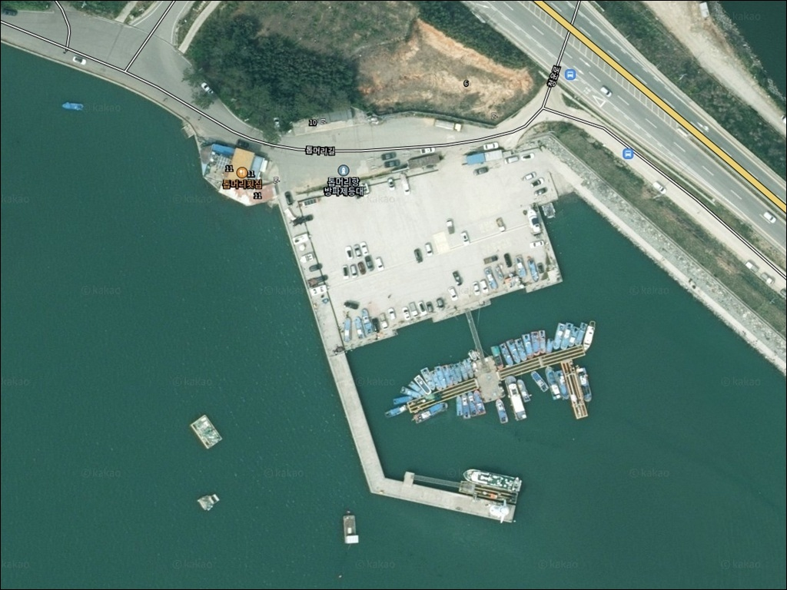
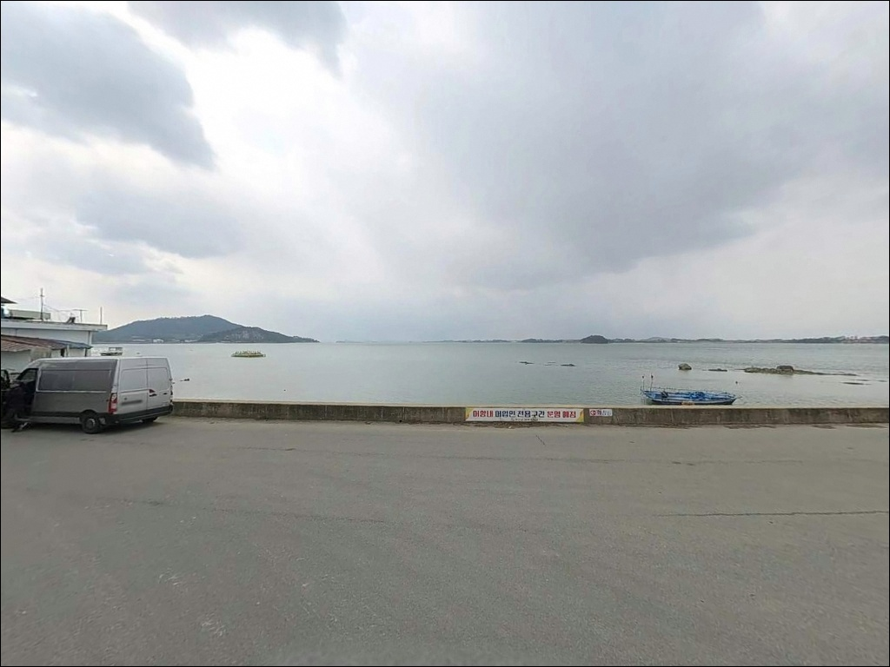
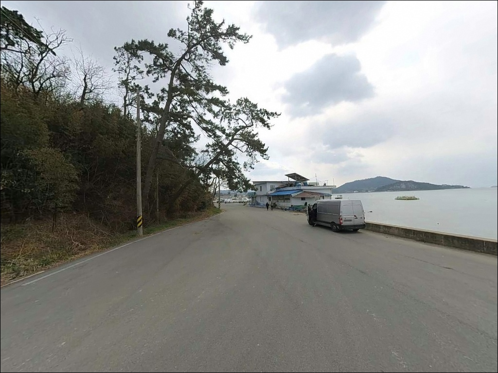
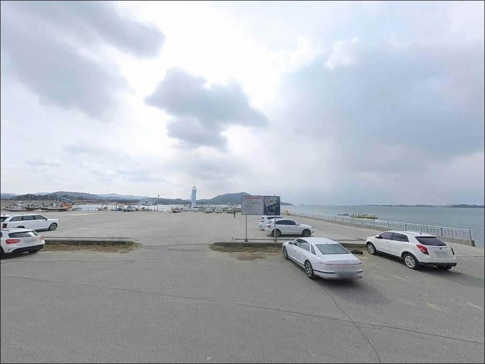
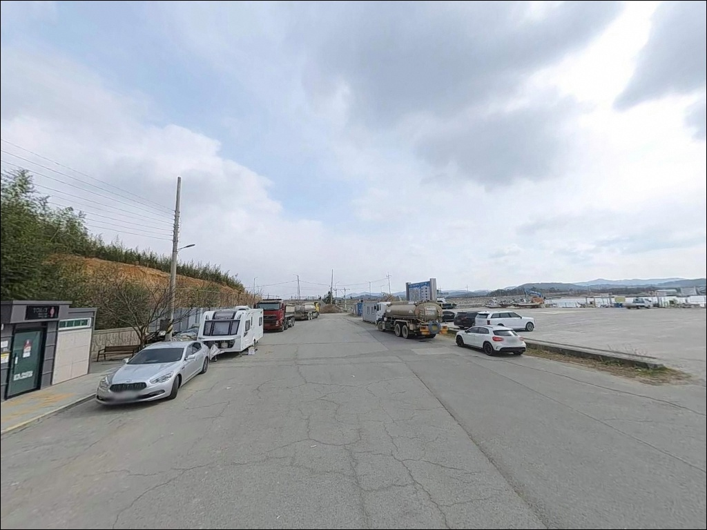
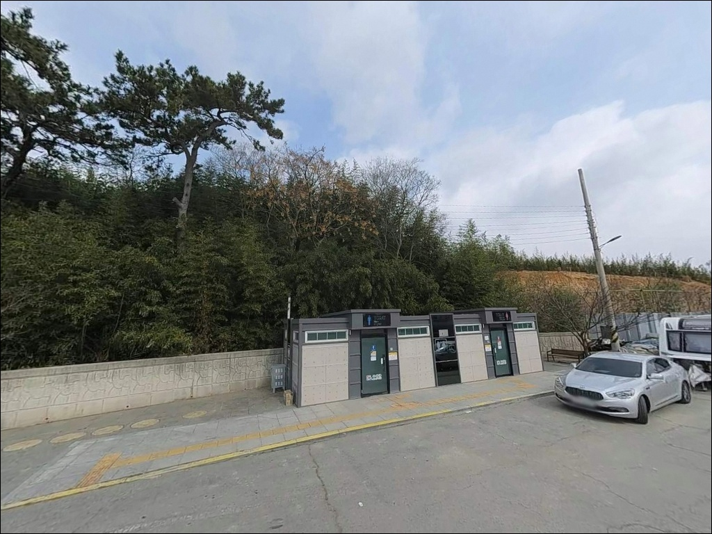
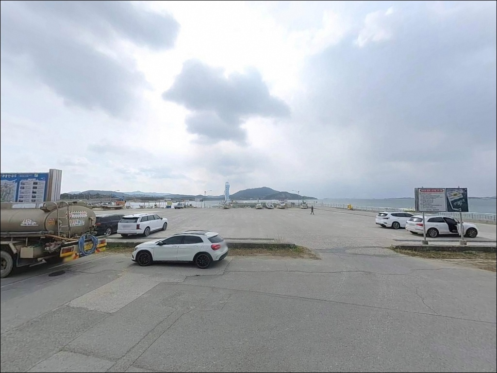
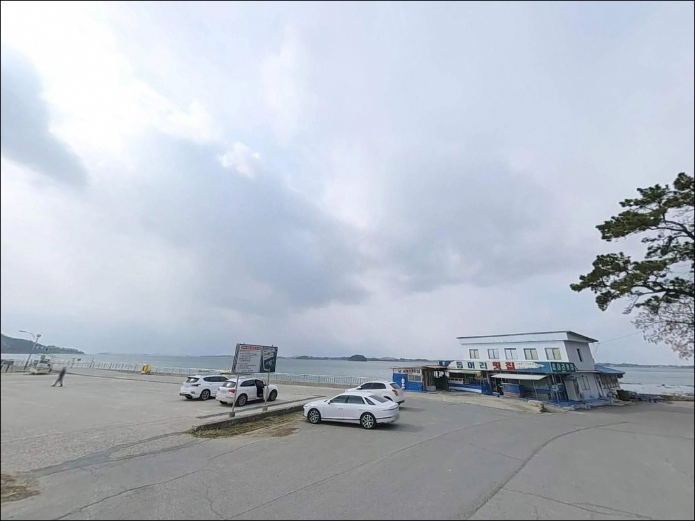
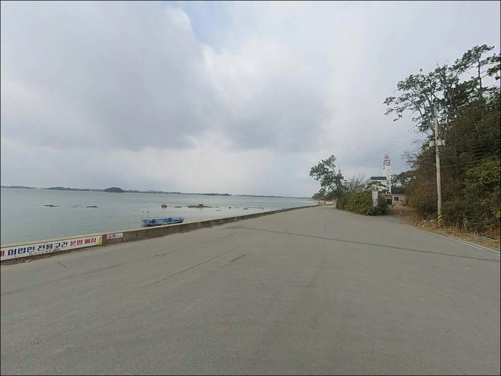

톱머리항, 전남 무안군 바다와 가장 가까이 머무는 차박, 낚시 해안 명소
이 페이지에는 광고(제휴 링크 포함)가 있으며, 광고 링크를 통해 구매하면 운영자가 판매 수익 또는 수수료를 받을 수 있습니다. 포인트 사진: 카카오맵 스카이뷰·로드뷰. 이 페이지의 지도·사진 이미지는 카카오맵의 실제 서비스 이미지와 다를 수 있습니다.


포인트 안내
톱머리항
전남 무안군 망운면 피서리 809-33
톱머리항에서 가장 많이 틀리는 판단은
물때를 확인하지 않고 방문하는 것입니다.
간조 시에는 방파제 주변이 광범위하게 갯벌로 드러나
어떤 채비를 써도 유효한 수심을 확보하기 어렵습니다.
만조 전후 들물 타이밍을 잡아야만
이 포인트의 낚시 여건이 제대로 열립니다.
전남 무안군 망운면 피서리,
톱머리해수욕장과 나란히 자리한 이 방파제는
비행기 형상의 조형 등대가 설치된
독특한 구조의 지방어항입니다.
넓은 공영 주차장과 방파제를 갖추고 있으며,
봄철 감성돔 포인트로
무안 현지 낚시꾼 사이에 이름이 알려진 곳입니다.
이 글은 톱머리항의 방파제 지형 구조,
물때 기반 낚시 여건, 진입·차박 환경,
낚시 스타일별 공략 조건에 집중합니다.
조황 단정이나 특정 어종 보장은
이 글의 범위에 포함되지 않습니다.

1. 진입 동선과 포인트 접근성
무안읍에서 서쪽으로 약 8km 거리에 위치한
톱머리항은 무안국제공항 인근이라
진입 도로 상태가 비교적 양호합니다.
해수욕장과 항구를 연결하는 진입로는
포장 구간으로 정비되어 있어
승용차부터 중형 SUV까지
진입에 큰 어려움이 없는 구조입니다.
방파제 등대 앞쪽에 공영 주차장이 운영되며
동시 120대 수용이 가능합니다.
주차 요금은 무료입니다.
해수욕장과 항구 구역에 걸쳐 넓게 조성된 구조라
회차 여건도 대부분 차량 기준으로 무리가 없습니다.
성수기(7~8월)에는 해수욕장 방문객 차량이 집중됩니다.
낚시 목적이라면 이른 새벽 진입이
주차 여건 면에서 훨씬 유리합니다.
방파제 등대 인근 공터를 최우선으로 잡고,
여의치 않을 경우 해수욕장 주차장에서
도보로 이동하는 동선을 계획해야 합니다.

2. 차박 환경과 야간 체류 여건
톱머리항은 주차 공간이 넓고
해수욕장과 인접해 차박 베이스로 연계하기 좋은 구조입니다.
비행기 조형 등대와 해안도로 경관조명이 설치되어 있어
방파제 초입과 등대 주변은
야간 시야 확보가 비교적 나은 편입니다.
다만 이 포인트는 서해 오픈형 구조라
바람이 직격으로 들어오는 환경입니다.
기상 조건에 따라 해무와 바람이 강하게 형성될 수 있어
방풍 장비와 침구 습기 대비가 필요합니다.
무안국제공항이 가까워
야간 항공기 소음이 들릴 수 있다는 점도
사전에 감수해야 하는 환경입니다.
관광지 인접 구조 특성상 성수기에는
사람 왕래가 많은 환경을 감수해야 합니다.
프라이버시 여건은 낮은 편으로,
이 포인트는 낚시 후 단순 야간 체류에 활용하는 방식이
가장 현실적인 운용입니다.


3. 주변 편의시설 및 인프라 현황
방파제 주차장과 해수욕장 구역에
공용 화장실이 확인됩니다.
해수욕장 주변으로 횟집 여러 곳이 운영 중이라
낚시 후 해산물로 마무리하는 동선과
자연스럽게 연결됩니다.
낚시 소품과 미끼는 현장 주변에서 구하기 어렵습니다.
무안읍 방향으로 약 8km 이동하면
서해안낚시할인마트·무안꽃낚시·무안IC낚시마트 등
낚시점 3곳이 있으며 모두 무안읍 시내에 위치합니다.
출발 전 무안읍에서 채비를 완비하고 오는 것이
현실적인 준비 순서입니다.
식수·얼음·간식은
무안읍 출발 시 미리 챙겨오는 것이 안전합니다.
현장 즉시 이용 가능한 편의점은
확인되지 않으므로 완전 자급 체제로 진입하는 편이
낫습니다.

4. 간조에 도착하면 낚시가 불가능한 이유 — 방문 전 준비사항
톱머리항 방문 전 가장 먼저 해야 할 일은
물때 확인입니다.
바다타임에서 "톱머리" 또는 "망운면" 기준
물때표를 검색하면 해당 지역 조위를 확인할 수 있습니다.
들물에서 만조 전후 2시간 내외가
이 포인트에서 낚시 여건이 열리는 핵심 타이밍입니다.
물때 계획 없이 간조에 도착하면
방파제 주변이 갯벌로 드러나
어떤 채비도 유효한 수심을 확보하기 어렵습니다.
물이 빠지는 속도도 빠른 편이라
만조가 지난 이후 채비를 오래 운용하면
수거 타이밍도 놓치기 쉽습니다.
물 빠짐 속도를 감안한 철수 계획을
입장 전에 미리 잡아두는 것이 기본 운용 방식입니다.
채비는 여분을 넉넉하게 준비하는 편이 좋습니다.
갯벌과 자갈이 혼재하는 바닥 지형 특성상
밑걸림이 발생하기 쉬운 구조입니다.
야간 입장 시에는 구명조끼와 헤드랜턴이 필수이며,
방파제 슬로프 구간은 조류와 해조류로 인해
미끄럼에 각별히 주의해야 합니다.

5. 지형 기반 낚시 여건 분석
톱머리항은 서해 내만에 자리한 갯벌형 방파제 포인트입니다.
방파제와 선착장이 결합된 구조로
외항은 바다 방향으로 열려 있고
내항은 어선 정박 위주의 완만한 지형입니다.
방파제 끝단 외향 쪽이 이 포인트의 핵심 자리이며,
상대적으로 수심이 확보되고
조류 흐름이 살아 있는 구간입니다.
서해 내만 특성상 조수간만의 차가 매우 크게 작용합니다.
만조 시에는 원투와 찌낚시가 가능한 수심이 형성되지만
간조 시에는 갯벌이 광범위하게 노출됩니다.
바닥은 펄과 자갈이 섞인 혼합형 구조라
밑걸림을 감안한 채비 운용이 기본 전제입니다.
들물(중들물~중날물) 시간대에 활성도가 높아지는
전형적인 서해 타이밍형 포인트 특성을 보입니다.
창포만 방조제와 연계된 조류 흐름이
포인트 형성에 영향을 줍니다.
톱머리항 방파제 끝단은 서해 갯벌형 포구 중에서도
만조 전후 타이밍에만 낚시 여건이 열리는 구조입니다.
이 타이밍을 놓치면 당일 낚시 자체가 불가능해집니다.
최신 조황은 출조 전
"톱머리항 조황" 또는 "무안 망운면 방파제 낚시"로
검색해 가장 최근 기록을 먼저 확인하시기 바랍니다.


6. 포인트에 어울리는 낚시 스타일
이 포인트에서 가장 잘 맞는 낚시는 원투낚시입니다.
갯벌·자갈 혼합 바닥의 외항 방향으로 채비를 멀리 보내
숭어·붕장어·도다리 계열을 노리는 방식이
톱머리항 지형 구조와 잘 맞습니다.
만조 전후 수심이 확보되는 타이밍에
외항 방향 장거리 캐스팅이 가장 유효합니다.
봄(4~5월)에는 방파제 끝단에서
감성돔 찌낚시를 노려볼 수 있습니다.
이 시기 씨알이 굵은 경향이 있으며
현지 조행기에서 봄 감성돔이 꾸준히 언급되는 포인트입니다.
조류가 살아 있는 들물 타이밍에
외항 쪽으로 흘림 찌채비를 운용하는 방식이
이 지형과 시즌의 조합에 어울립니다.
가을(9~10월)에는 주꾸미·갑오징어 에깅으로
방식을 전환할 수 있습니다.
톱머리 해수욕장 주변이 주꾸미 포인트로
언급되는 기록이 있으며,
창포만 방조제 일대 갑오징어 시즌과
가을에 시기가 겹쳐 에깅 공략의 유효 타이밍이 됩니다.
내항 선착장 쪽은 조류가 약하고 수심이 얕아
생활낚시 수준으로 가볍게 망둥어·숭어를
노리는 자리로 활용하는 것이 적합합니다.

7. 대안 포인트와 플랜 B 동선
톱머리항 조류가 너무 강하거나
간조 타이밍과 방문이 겹쳐 낚시 여건이 닫혔을 때는
같은 망운면 해안선의
구로리 방파제가 첫 번째 대안입니다.
봄 감성돔 시즌에 현지 후기에서 함께 언급되는 포인트로,
만조 시 낚시 여건이 열리는 구조입니다.
무안 현지에서 감성돔 빠지낚시 포인트로 유명한
홀통(청계면)은
톱머리항에서 차로 30분 내외 거리입니다.
거리가 있는 만큼 사전에 이동 동선을 계획해두면
톱머리항과 홀통을 묶어
하루 일정으로 운용할 수 있습니다.
무안 서해안 라인 전체로 범위를 넓히면
한국의 아름다운 어촌 100선에 선정된
도리포항(해제면 송석리)이 또 다른 선택지입니다.
지방어항으로 지정된 방파제 구조를 갖추고 있어
낚시 포인트로서 기반이 안정적입니다.
톱머리항이 여의치 않을 때
무안 서해안 라인의 마지막 대안으로 활용할 수 있습니다.
차박 여건이 부족하다고 느껴질 경우
무안황토갯벌랜드 오토캠핑장(해제면 만송로 36)이
예약제로 운영되는 정식 야영 시설입니다.
갯벌 인접 환경에서 보다 안정적인 야간 체류를 원한다면
이 캠핑장을 대안으로 검토할 수 있습니다.

물때 하나 맞추면
톱머리항이 달리 보입니다
봄 감성돔이나 가을 주꾸미·에깅을 즐기는 낚시꾼이라면
톱머리항 방파제는 시즌에 맞는 선택입니다.
넓은 주차 공간과 양호한 진입 여건 덕에
초행길에도 큰 부담 없이 접근할 수 있습니다.
비행기 조형 등대와 해수욕장이 함께 있는 독특한 구조라
가족과 함께하는 낚시 여행의 베이스로도 무리가 없는 곳입니다.
반면 물때 확인 없이 간조에 맞춰 도착하거나,
성수기에 조용한 차박을 기대하고 간다면
기대와 다른 현장을 마주할 수 있습니다.
물때 확인, 채비 사전 준비, 기상 점검—
이 세 가지를 갖추고 간다면
무안 서해안에서 기억에 남는 포인트가 될 수 있는 곳입니다.
바람이 잠잠한 날 물때를 맞춰
방파제 끝에 자리를 잡고
등대 불빛 아래 하룻밤 머무는 차박 낚시라면,
이 포인트의 서해 감성이 제대로 살아납니다.